🖥️ graphic design ✒️ digital media ⚜️ fantasy ⚔️ visual storytelling 🏰 creative direction 🖼️ internet culture 🌐 critical AI ✨ ethical technology 🌏 UX/UI
Worry Box
Worry Box is a mobile app designed to help users manage their anxiety. Based on the principles of Cognitive Behavioural Therapy (CBT), the app allows users to set aside their worries in a safe and contained space.
Worry Box was developed for a university assignment, with the goal of improving an everyday experience for a single individual. The design process involved identifying a problem through exploratory ethnographic research, developing and testing a solution, and creating a digital prototype.
Entropy
Entropy is a monospace display typeface inspired by ‘old-computer’ style fonts such as Westminster, Data-70 and Amelia. It blends organic, rounded forms with underlying geometry reminiscent of mechanical infrastructure.
Entropy is intended to raise questions about the role of technology in our lives and how it has reshaped our perception of reality. Designed for a university assignment over the course of nine weeks.
Brood & Baron
Brood & Baron is a conceptual home décor brand created for a university assignment.
Inspired by fantasy and folklore, Brood & Baron aims to encourage slow, thoughtful consumption of artisan goods and the value of individuality in the face of corporate uniformity.
The Curse, Conjure, Conquer banners (a play on the infamous Live Laugh Love phrase) are hand-painted and sewed by myself using fabric off-cuts and recycled materials.
ATypI Brisbane 24
Shortlisted brand identity concept for the 2024 annual ATypI conference, which took place in Brisbane, QLD.
Thoughts on Typography and Layout
Thoughts on Typography and Layout is a university project designed to provide students with a practical learning experience in typeface selections, page layouts, type setting, and print preparation.
The booklet contains a collection of short essays and extracts by acclaimed design writers Ellen Lupton, David Frej, Katherine McCoy, Josef Müller-Brockmann, and Beatrice Warde.